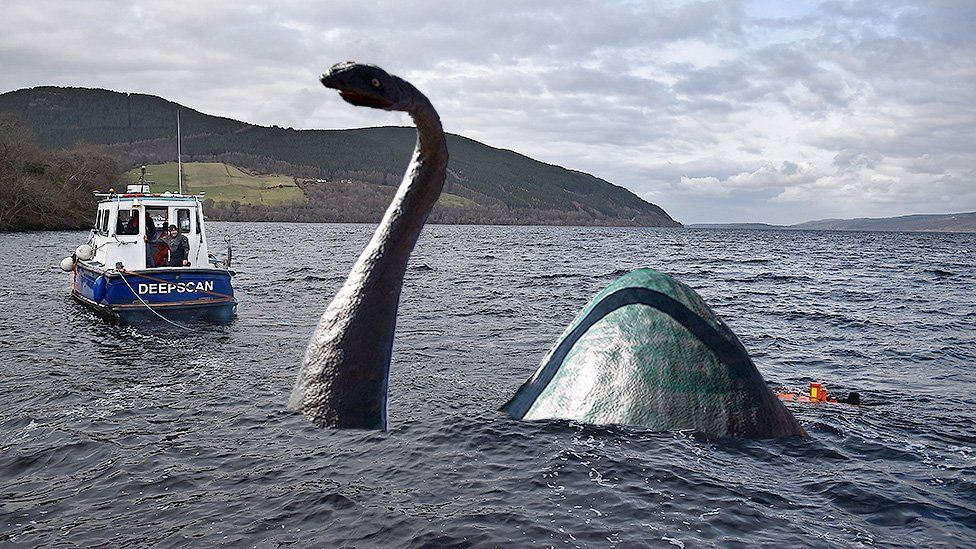

{% extends '_layout.html' %}
{% block title %}Cryptid Catalog | Encyclopedia{% endblock %}
{% block body %}
- BACK
- LOCH NESS MONSTER
- Type: Aquatic

- Also referred to as “Nessie”, the Lock Ness Monster is a creature of Scottland’s highland lakes. This creature is large with a long neck.
Sightings of it peaking through the water are said to resemble a brachiosaurus with humps along its back that reach the surface as it swims in a snake-like manner across the water.
Fishermen who have had their boats capsized blame the lock ness monster and tell stories of the creature circling and stalking them in the water. Nessie’s behavior has been deemed to be taunting and vicious.
{% endblock %}